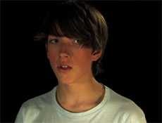

|
YVES ZINTL
Acid and Ice Cream | 2008 | 13'24''
Format: DV
Musik: Murena
Texte: Tobias Yves Zintel, Ian Curtis, Andrew Eldrich, Rudolf Steiner
Mit Sean Macdonagh, Johannes Suhm, Benjamin Mehrlein, Andreas Mayer, Marl Solf, Alcuin Stevenson, Jonathan Penca, Eike Ahrens and Maximilian Bildhauer
courtsey barbara gross galerie
www.tourette-tv.com
Dekonstruktion des Mediums Film, verbunden mit einer Reflexion über die Konstruiertheit menschlicher Identität.
Portraitaufnahmen junger Männer, Nah- und Makroaufnahmen von Moos- und Pflanzenformationen und Aufnahmen von Kühl- und Holzschränken, aus denen farbiges Eis heraus schmilzt. Dazu Texte, die von einem Sprachsynthesizer gesprochen werden. Die Schauspieler sind als bloße Körperhüllen eingesetzt und an Starportraits der Fünfziger und Sechziger Jahre angelehnt.
"But I am unimpressed, because destruction is just decoration." – Tobias Yves Zintel
Tobias Yves Zintel, geb. 1975 in Passau. Lebt und arbeitet in München und Berlin. Von 2002 bis 2007 Studium an der Akademie der bildenden Kunst in München bei Joseph Kosuth. Zahlreiche Videos für Theaterprojekte u.a. für das Maxim Gorki Theater, Berlin, das Schauspiel Frankfurt und das Thalia Theater, Hamburg.
Einzelausstellungen: 2006 | fear fear fear, Münchner Kammerspiele | 2007 | Entertaining Satan, Barbara Gross Galerie, München |2008 | Confession of Aggression, Doing Identity Festival, Münchner Kammerspiele - Neues Haus | Interesting Productions - Reunion, The Office, Berlin
Gruppenausstellungen (Auswahl): 2005 | The world of tourette-tv #2 Münchner Volkstheater | Favoriten - Junge Kunst in München, Kunstbau Lenbachhaus | Club-transmediale, Maria am Ostbahnhof, Berlin | 2006 | Interesting Productions #2, Städtische Kunsthalle Lothringer 13, München | Bonnie Prince German, Galerie low salt, Glasgow, GB | Drei Minuten Nationalsozialismus, Bunnyhill II, Münchner Kammerspiele | 2008 | Interesting Productions #3, The Fortress of Night and Day, ZKMax, München | Interesting Productions #2, Städtische Galerie im Lenbachhaus, München | 2009 | Hauptschule der Freiheit, Münchner Kammerspiele
zurück
|